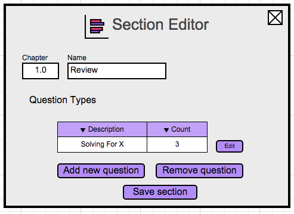

This scenario shows an instructor editing a section within a course, which contains the types of questions that can be on a test for this course. After coming from the last section detailing how to create a course, we assume that the instructor is editing a new section, as displayed in Figure 4.
Figure 4: Section Editor Initial View
The table in the center of the window labeled Question Types represents the types of questions that are present in this section. Each individual question type will have a list of questions that can be on the test. The Description is a string that represents the name for the type of question. The Count label in the tabel represents the number of questions that are stored for that question type.
When the instructor presses the Add new question button, the system responds by adding a new question type to the Question Types list.
When the instructor selects a question type and presses Remove question, the system responds by removing that question type and its associated questions from the section.
When the instructor selects the Edit button next to a question type, the system responds by displaying the question type editor, which will be detailed in the next section.

Figure 6: Sections View Filled
When the instructor presses the Save section button, the system responds by saving their changes
to this section and returns to the Courses view from the previous section.